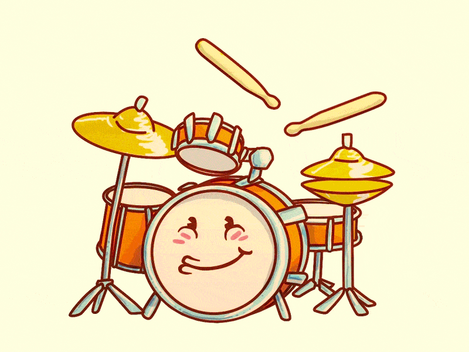
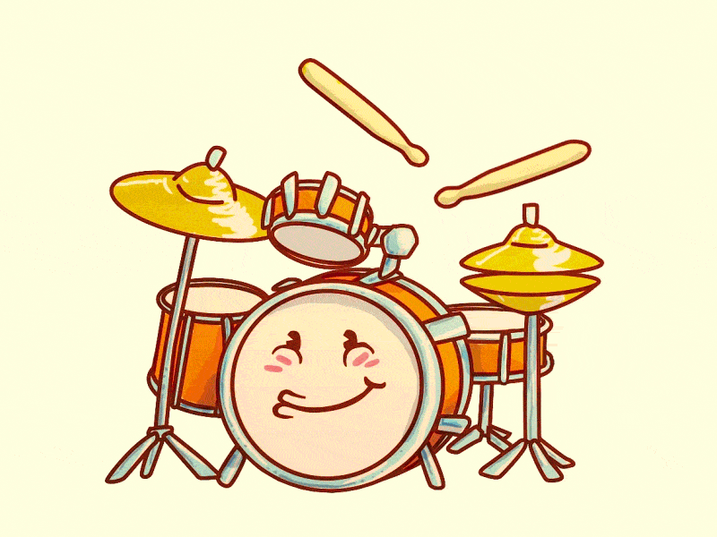
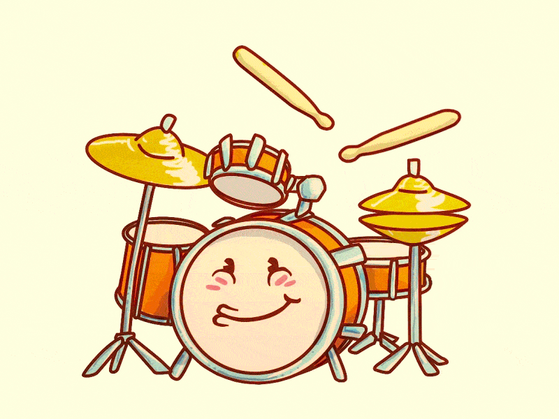

LES 3 MEILLEURS BATTEURS DU MONDE ET LEURS SOLOS INOUBLIABLES
Ils font palpiter la musique et les coeurs de ceux qui l'écoutent. Les
batteurs, traditionnellement installés à l'arrière de la scène, sont
pourtant l'essence même de la musique : le rythme. Un tempo qui peut
se faire très speed, très puissant dans les genres musicaux que nous
avons choisi d'aborder aujourd'hui : le rock, le hard rock et leurs
enfants. Voici notre sélection des meilleurs batteurs de tous les
temps. La liste ne peut être exhaustive, et si vous considérez qu'elle
peut-être améliorée, n'hésitez pas à nous signaler vos héros des
baguettes !

JOHN BONHAM
Un sacré bonhomme, ce Bonham. John Bonham, alias Bonzo, génie
enchaîné, déchaîné, à ses fûts, a fait les plus belles heures des
lives de "Led Zeppelin". Exemple, ce morceau de bravoure sur "Moby
Dick" au Royal Albert Hall en 1970. Sur cette performance purement
bluffante (mais juste à titre d’exemple !), il frappe même les peaux
à mains nues. Erigé au rang de "meilleur batteur de tous les temps"
par le lectorat de "Rolling Stone" en 1973, ce natif du
Worcestershire, mort à seulement 32 ans, reste une référence pour
tous les amateurs de (très) bonnes baguettes.
KEITH MOON
Au cas (improbable) où vous n’auriez jamais entendu parler des
"Who", honte à vous car vous ne regardez même pas les Experts.
Volontairement, nous avons choisi le titre (devenu générique
emblématique de la série) "Who are you" de la bande de Roger
Daltrey. Voici deux vidéos, dont l’une isole l’enregistrement de
l’intro et du groove de feu le diaboliquement talentueux Keith Moon.
De quoi donner une petite idée de la sauvage virtuosité de celui qui
a inspiré Animal, le batteur survolté du Muppet Show.
PHIL RUDD
Précis, puissant, généreux dans son style et énorme dans son groove,
Phil Rudd est l’un des sales gosses qui ont fait le succès
d'"AC/DC". L’Australien d’aujourd’hui 62 ans a certes eu des
problèmes avec Malcolm Young mais sa participation à la bande
emblématique du hard rock aura été déterminante.
Ginger Baker
Attention, culte. "Cream" qui outre un certain Eric Clapton et Jack Bruce, tenait un
sacré batteur en la personne de Ginger Baker nous a légué "Sunshine of your love" (1977) où, sans doute,
l’homme derrière ses percussions, souvent novatrices pour l’époque, était au sommet de son art. Le Britannique
a ensuite rejoint "Blind Faith" (toujours avec Clapton), puis créé la formation de jazz-rock "Ginger Baker’s
Air Force" et a notamment collaboré avec Fela Kuti.
Ringo Starr
Parmi les Fab Four, il n’est (tout étant relatif) certainement pas le premier qui
viendra à l’esprit du grand public, mais Ringo Starr fut un sacrément bel atout du quatuor historique. Que
serait, par exemple, "Come together" sans son sens animal du tempo ? Et l’on ne peut nier qu’il a contribué à
l’évolution du style des "Beatles".
Dave Grohl
C'est pas drôle. Dave Grohl est si bien dans ses pompes de musicien que, de retour
de concert, il vous donne envie de brûler vos instruments. Alors qu'il maîtrise déjà la guitare, la basse, le
piano et chante (tant qu'à faire...), il est avant tout reconnu comme un batteur de folie. Cet autodidacte (du
moins en ce qui concerne les bases des percussions) ultra-doué a donné toute leur puissance de feu à
"Nirvana", "Queens of the stone age" ou encore "Them crooked vultures" (passons sur ses nombreuses
collaborations et le fait qu'il a tout bêtement créé les "Foo fighters" !).

 
